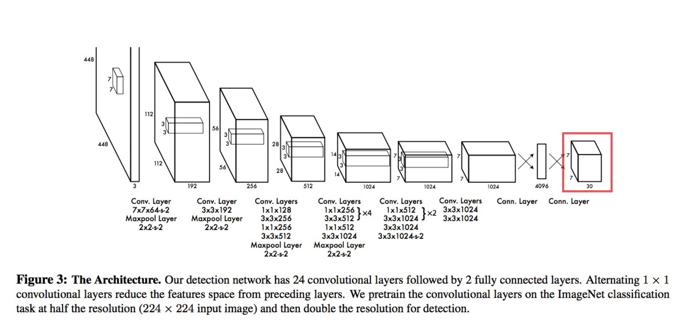
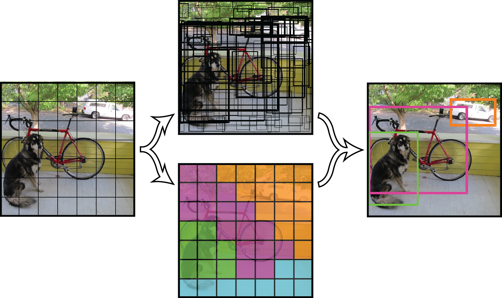
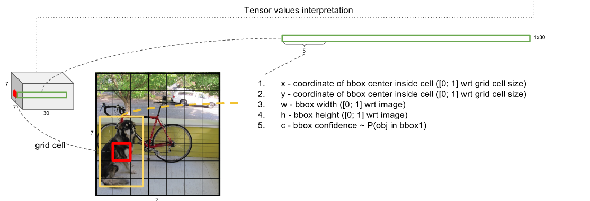
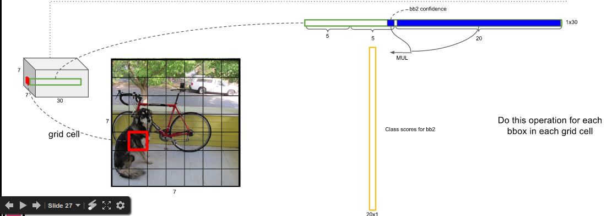
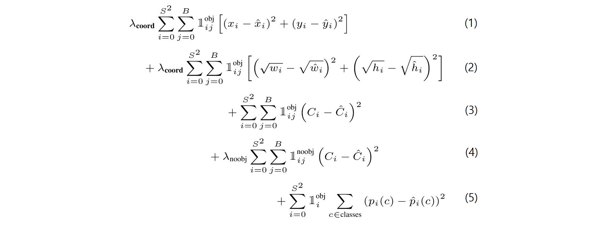

YOLO
Model Architecture
Faster R CNN과 다르게 YOLO의 Model은 하나의 Network로만 이루어져 있습니다. 그래서 faster r cnn 보다 학습하는 과정도 단순화 되어있고, process speed도 더 빠르지 않은가 싶습니다.

여기서 가장 중요한 부분은 저기 빨간색 box 부분입니다. 저 부분을 visual화 시켜보면 이런식으로 N x N 사각형으로 이루어져 있습니다.
이 N x N 칸 각각을 Grid Cell이라고 합니다.

Grid Cell
기본적인 conv network를 거친후에 N x N x (B * 5 + cls)로 변환을 합니다.

Grid Cell은 Bbox를 예측합니다. 이 때 BBox의 개수를 B 라고 하고, cls는 분류할 class의 개수를 말합니다.
Grid Cell의 Bbox는 각각 confidence score를 가지고 있습니다. confidence score는 Pr(Object) IOU로서 **(물체가 있을 확률) (Bbox 와 Ground Truth Box가 겹치는 정도 == IOU)이다.**
- 그리고 cls에서 각각의 class에 해당하는 Object인지를 확인하며 이를 ‘conditional class probability’라 부른다. 글자가 기므로 CCP로 부르겠습니다.
Detect Object

1 | 각각의 bbox의 confidence와 CCP를 곱하면 class specific confidence score(CSCS)가 나오는데 해당 BBox에 대해 어떤 물체인지를 판별한다고 보면된다. |
Non-Maximum Suppression
1 | 하나의 class에 대해 중복된 bbox에 대하여 IOU를 구해 일정수치 이상이면 그 둘은 하나의 Object를 찾은것이라고 판단하여 신뢰도가 높은 Bbox를 남겨두고 나머지를 0으로 채운다. |
Loss Function

- Object가 있는 Grid Cell i번째에 대해 Bbox j번째의 x, y를 계산
- Object가 있는 Grid Cell i번째에 대해 Bbox j번째의 width, height를 계산
- Object가 있는 Grid Cell i번째에 대해 confidence score를 계산
- Object가 없는 Grid Cell i번째에 대해 confidence score를 계산
- Object가 있는 Grid Cell i번째에 대해 CSCS를 계산
- λcoord 는 좌표값에 대한 loss와 다른 loss의 균형을 맞추기 위한 balance parameter
- λnoobj 는 object가 없는 경우가 많으므로 없는 경우와 있는 경우의 균형을 맞추기 위한 balance prameter